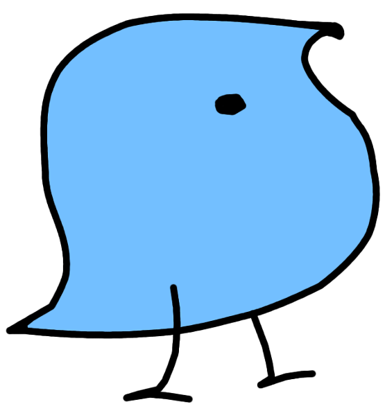
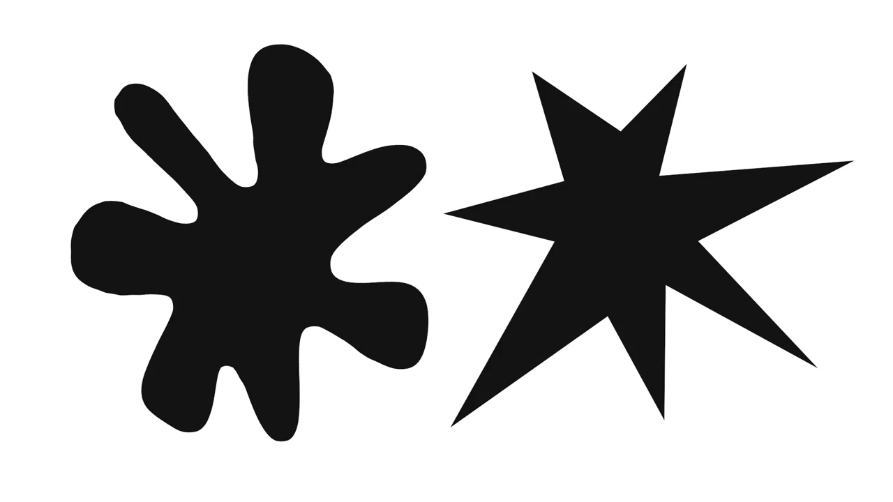

Let me be descriptive here!
Sociolinguistics
In sociolinguistics, I am interested in the sound level of language. I investigate how pronunciation is influenced by social factors such as age, gender, sex, and class. As student assistant, I am working in the DFG-funded project Tacking Language Variation and Change across the Lifespan (LaVaLi) hosted in the Sociolinguistics Lab at the University Duisburg-Essen led by Isabelle Buchstaller. The project explores how people's speech changes over the course of their lifespan. The data used within the project comes from the Tyneside area in the Northeast of England. For more information about this project visit the project's website or the project's blog.
Psycholinguistics
My interests in psycholinguistics lie in multilingualism. I am especially interested in the way different learned languages interact in multilingual speakers' minds. My goal is to combine methods and approaches from sociolinguistics and psycholinguistics to investigate whether studies conducted in laboratories are representative of everyday languages. My interest in multilingualism comes from my own experience as I spent my first year of university in France. While I was using French every day to improve my language skills, I rarely used English which I had learned in school and used in my day-to-day life (e.g., while watching TV). Whenever I tried to speak English, it was quite hard. I accidentally slipped back into French.
History

My interest in history focuses on the end of the Middle Ages and the beginning of the Renaissance. I am particularly interested in the Medici family, which lived from the 12th to the 15th century in Florence and helped shape the political landscape. The Medici owe their rise to power to their skills in the banking business. Through calculated risks, the family rose from a simple banking family to Dukes and Duchess of Tuscany and produced three popes over the course of history. Additionally, I am interested in the Borgia family, who are said to have been involved in many scandals during their time in the Vatican.
Musicology
In musicology I am interested in two different areas: I like to combine linguistics and history with music. In historical musicology, I am looking into the relationship between Lorenzo il Magnifico and his musicians. So far, not a lot of research has been done in this area. Most studies focus on Lorenzo's relationship with other artists (e.g., painters or sculptors). For the combination of musicology and linguistics, I like to look at how music influences the acquisition of languages and how both language and music are processed.